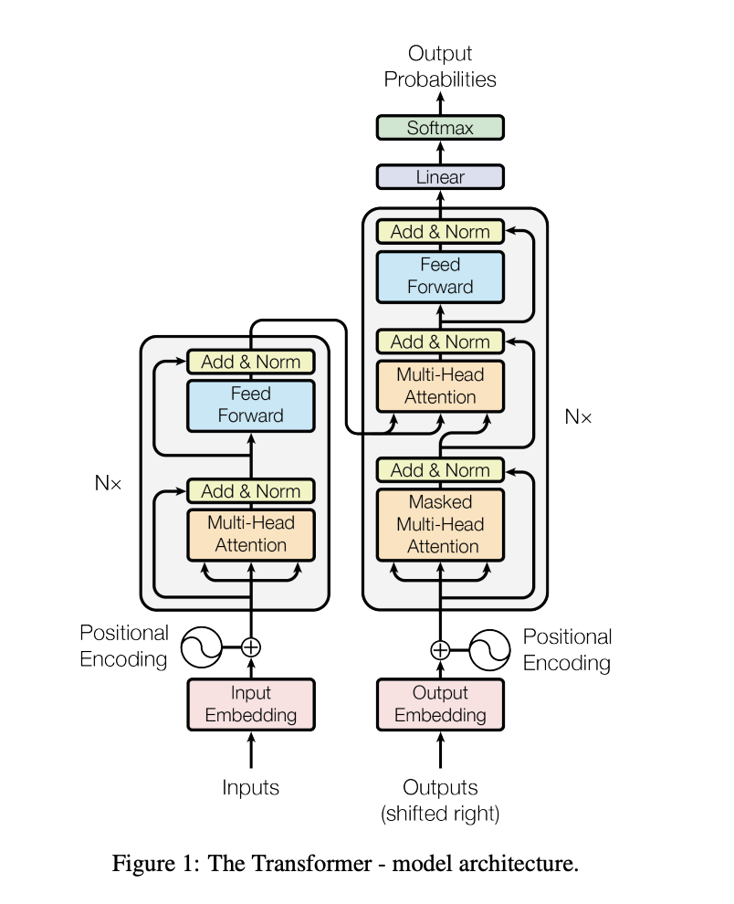

AI has been in the spotlight ever since ChatGPT captured everyone’s attention. It evolutioned how we use the internet. For a lot of people, it changed how they write, how they approach to their daily work. The technology is there, so what’s next? What does the future hold from here?
As you start reading this, you may be wondering why we are revisiting this topic. People have been talking about AI and what it can do since 2023, and you might not want to hear about it in 2025 again. Please bear with me for a moment, there is more to explore.
High-level Link to heading
In order to understand what will be next, we need to take a look back at how we got here. Today, we will be mainly focusing on LLMs, since that’s what’s mostly discussed.
What is LLM? I initially planned to write a detailed section on LLMs, but there is already a good amount of material out there from experts far more experienced than me. For an overview, I recommend reading through Luis’ article here. It provided a good explaination on LLM models and RAG applications.
In simple terms, a large lanaguage model is something can process billions or trillions amount of data, and understanding the information that’s given. In order to do such thing, what do we need?
To understand the architecture, there was a paper explain what is “Transformer”, in paper “Attention is All You Need”. In this paper, it went into details on what is “Transformer”, why it is superior to RNN. It is the bread and butter for sequence modeling and transduction, the concept of attention mechanisms, allow modeling of dependencis regardless of sequence distance. This design enables greater parallelization and achieves state-of-the-art translation quality with significantly reduced training time, such as 12 hours on eight P100 GPUs. The Transformer represents a major shift in sequence modeling by overcoming the constraints of sequential computation. Although, it takes even longer and require more coputational power to trian a modern LLMs like GPT-4.
Here is a simplified transformer architecture:  Figure 1: from “Attention is All You Need”
How is lanuage processed Link to heading
To understand how LLMs process languages, it involves the following perspectives, this is probably the same thing you would learn in college:
- Tokenize
- Context understanding
Tokenization Link to heading
Think about how you initially learned English. You start with words like Apple, Table, Pear, Peanuts, Window, etc. Even before that, you start with letters like A, B, C, D, E…etc. When we do tokenization, it is the same thing. There are couple different kinds of tokenization, for example, we have a sentence, “An apple is on a table”, with tokenization, this sentence might be broken down to [“An”,“apple”,“is”,“on”,“a”,“table”], this is called word-level tokenization, there are also Subword Tokenization, and Character-Level Tokenization, which will break the word into character level.
Context Understanding Link to heading
Context understanding refers to the ability of an NLP model to interpret the meaning of words or phrases based on their surrounding context. This is crucial because words can have multiple meanings depending on how they are used. For example, “You are sick”, under different circumstance, it can mean different things. If you are talking to someone, “You are sick” could be you are calling it out as the other person is actually sick; under a really hyped condition like you just watched someone did an insane move while bouldering, and you yelled out “You are sick”, that could mean you loved the moved that person just did, and you are praising them. There are sub-context underlying the things you say, which is disfficult for a machine to understand. Now in my examples, of course, a machine would never be able to conprehend what’s happening just based on those simple words, cause we are missing a lot of context here. For the machine to undertand what you are talking about, let’s add more to what we are talking about. If we changed the first sentence from “You are sick” to “You are sick, you probably should see a doctor”, then with context understanding, it would know you must be referring to someone is sick, ill. Let’s also modify the second situation to “That was a sick move, how did you go from the first hold to the second hold on the bouldering wall”. This highlights the importance of providing complete and clear input when interacting with LLMs.
Training Link to heading
With Transformer achitecture and language processing, we have our model now. The next step is training the model.
Training includes 2 parts, pre-training, fine-tuning. Most of the LLMs we are using now are all pre-trained. Those models have been fed with large, diverse datasets, depends on the statistics output, it learns to predict the next word in a sequence. this is also why I think fine-tuning is essential. For example, if you want to know something specific from couple documents, then you will need to take those documents and feeding into the pre-trained model to help the model learn the things specifically for that subject matter. This example I just mentioned is called Domain-Specific Fine-Tuning. There are also other types of fine-tuning mechanisms, which I suggest you read on this DataCamp article, it explained the different types and provided examples for you to better understand it.
Challenges of AI Application in ERP Link to heading
Coming from an ERP background, with experiences in SAP and Salesforce, I am familiar with general manufacturing business processes, mainly includes sales, procurement, production. Now we have AI tools, how could we use them in ERP.
I believe the potential of AI in ERP space is huge. It can help with saving on costs in the long run, and help increase the efficiency of business processes. However, we should also take a look at couple potential issues could present:
-
Tech Debt As long as you work in tech, the idea of tech debt is probably not new to you. There has been a saying, if it ain’t broken, don’t touch it! This not only applies to software but also the hardware that’s used. We may need to take a look at the infrastructure a company currently has, in some cases, the hardware may need to be updated to a better CPU and GPU to have more computing power, so that it can handle the necessary calculations. This probably refers to the system that relies on the on-premises hardware to run. (Long live SAP BASIS!)
For the system that’s already on cloud, you also need to make sure that the cloud platform you picked could handle the amount of computation that will happen if you will be using AI.
The above tech debt was more referring to the hardware, also we need to take a look at some of the code that was developed in 1950s or 1960s, maybe it is due to an update or if the function can be replaced by a better tool. For example, it might be a good time to have COBOL be translated to Java.
-
Incomplete Data/Bad Data My past experiences on data migration projects and org merges tells me that data is always messy. The core of LLMs is the large text and information you feed into the pre-trained model to help refining it. When you have messy data, it is also hard to help the model to learn “positive data” vs “negative data” to provide a more reliable output. A cruecial step is to have someone go into a database and make sense of the data and understand what they represent, along side, to identify what wouold be good data to help refine the pre-trained model for what purpose. This is also why refining on the model with targeted, specific data is really important. The pre-trained model may not be fitting for what you need specifically. However, a smaller, targeted data, also comes with couple challenges, which we will discuss in the next point.
-
Biased Data and Potential Misinformation This could be part of the point we mentioned above, I would like to take it out as a separate point on its own. As a human, when you read an article, you can use your experience, your current knowledge, your own intuition to judge and put your own perspective on the information you received, sometimes even us as human beings, we rely on additional information and research to understand the information we received. A machine can still only do what it is told, the algorithm is developed by human and the data is provided by human, there could be different perspectives because different people are developing the software, collecting, applying data. I love the example that was given in “Artificial Intelligence” by Mueller, Massaron, Diamond; they took a car hit pedestrian as an example, when an officer goes to the driver, pedestrian and a bystander, they would have different facts from each other, even though from their standpoint, they are telling the truth.
In the book, Mueller, Massaron, Diamond also discussed five mistruths in data, including Commison, Omission, Perspective, Bias, Frame of reference. When the data is collected, there is probably limitations applied already, as the source of where the data is coming from, how the data was collected, etc, could all contribute to mistruth in data.
The book also talked about another case which I overlooked, there are also purposefully biased data. Those are contributed to a higher possibility of misinformation, in the purposefully biased data’s case, those data/information is designed to make general public to think in someone’s benefits.
As far as we are talking about data, I would like to bring up another point, for tools like ChatGPT, the data they used to train the model is historical data, the information might be out of date. This is another reason why, when we use those tools, we need to refine the model with our data, and we shouldn’t use it to replace google search all together, otherwsie, the information you are getting might be out of date.
-
Lack of a Purposefully Goal As AI agent is on the rise, everything wants to have some sort of connection to AI. We may want to take a step back and think about “Do you actually need AI?”, “Why AI is beneficial to us?” In some cases, a quick automation script could solve the problem better. Implementing AI in a system is not a set and forget case, you will still need to maintain it after the AI involved process is built. An analysis of ROI would be crucial here.
I personally think, a better way of approaching use cases would be first forget about AI exist, understand the requirements are and what problems are we trying to solve is the first step. Thinking of AI as another technology tool you can utilize to help solve your problem better. With that being said, AI tools should be part of solution, not part of purpose.
What’s Next Link to heading
So with everything we have discussed, what’s next? Are we doomed with AI uprising? Will AI Agents replace human beings? I don’t think so. As we discussed above on the challenges with AI, I see those challenges as new opportunities. We need to reduce tech debt, use AI in to solve problems, allowing human beings to focus on higher-value tasks. For example, I see some doctors are recording the conversation during a patient visit and using AI to summarize the discussion, with the patient’s consent of course. In that way, doctors can be more focused when talking to the patient and it also helped reducing the workload of a doctor on post-visit notes. I know, someone will say this could violate patient confidentiality, that’s why in California, there are 3 laws aimed to regulate health care-related AI and data privacy, they are AB-3030, SB-1223, SB-1120. “AB 3030 requires that health care providers disclose when they have used generative AI to create communications with patients. SB 1223 amended the California Consumer Privacy Act of 2018 to include neural data as sensitive personal information, whose collection and use companies can be directed to limit. Finally, SB 1120 limits the degree to which health insurers can use AI to determine medical necessity for member health care services.” (Health Care, AI, and the Law: An Emerging Regulatory Landscape in California) You can find more details in Health Care, AI, and the Law: An Emerging Regulatory Landscape in California.
As we develop more and more AI tools, transparency is key. It is extremely valuable to educate general public on how the recording of the conversation is used and how AI is used in the process; making sure people are comfortable with the use of AI tools. It not only can help build trust with the general public, but it also can help demonstrate the benefits of AI.
As humans, we need to be more responsible while developing softwares, and using any AI related technologies. Human beings will still be in the driver’s seat and technologies are tools to help advance our society overall.
References Link to heading
LLM Models and RAG Applications Step-by-Step by Luis Angel Pérez Ramos https://community.intersystems.com/post/llm-models-and-rag-applications-step-step-part-i-introduction
“Attention is All You Need” Paper Ashish Vaswani, Noam Shazeer, Niki Parmar, Jakob Uszkoreit, Llion Jones, Aidan N. Gomez, Lukasz Kaiser, Illia Polosukhin (2017). Attention is All You Need. https://arxiv.org/pdf/1706.03762
DataCamp Article on Fine-Tuning LLMs, Josep Ferrer https://www.datacamp.com/tutorial/fine-tuning-large-language-models
“Artificial Intelligence” by Mueller, Massaron, and Diamond Mueller, J. P., Massaron, L., & Diamond, J. (2020). Artificial Intelligence for Dummies. Wiley, 3rd Edition
Health Care, AI, and the Law: An Emerging Regulatory Landscape in California by Rebekah Ninan https://petrieflom.law.harvard.edu/2024/10/17/health-care-ai-and-the-law-an-emerging-regulatory-landscape-in-california/#:~:text=AB%203030%20requires%20that%20health,can%20be%20directed%20to%20limit.